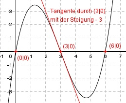

Aufgabe 38 Der Graph einer ganzrationalen Funktion 3. Grades geht durch den Koordinatenursprung, hat bei x = 6 eine Nullstelle und bei x = 3 einen Wendepunkt mit der Steigung -3. Wie lautet seine Funktionsgleichung?  Allgemeine Form einer ganzrationalen Funktion 3. Grades: f(x) = ax3 + bx2 + cx + d f’(x) = 3ax2 + 2bx + c f’’(x) = 6ax + 2b 4 Bedingungen: 1. Geht durch den Koordinatenursprung bedeutet: f(0) = 0 --> a * 03 + b * 02 + c * 0 + d = 0 --> d = 0 2. Hat bei x = 6 eine Nullstelle bedeutet (d = 0 eingesetzt): f(6) = 0 --> a * 63 + b * 62 + c * 6 = 0 --> 216a + 36b + 6c = 0 I 3. Hat bei x = 6 einen Wendepunkt bedeutet: f’’(3) = 0 --> 6a * 3 + 2b = 0 --> 18a + 2b = 0 II 4. Hat einen Wendepunkt bei x = 3 mit der Steigung -3 bedeutet: f’(3) = -3 --> 3a * 32 + 2b * 3 + c = -3 --> 27a + 6b + c = -3 III III * (-6) + I -162a - 36b - 6c = 18 216a + 36b + 6c = 0 --------------------- 54a = 18|:54 18 1 a = ----- = --- 54 3 a = 1/3 II eingesetzt: 18 * 1/3 + 2b = 0 6 + 2b = 0 |-6 2b = -6 |:2 b = -3 a = 1/3 und b = - 3 in III eingesetzt: 27 * 1/3 + 6 * (-3) + c = -3 9 - 18 + c = -3 -9 + c = -3 |+9 c = 6 Gesuchte Funktionsgleichung: f(x) = (1/3)x3 - 3x2 + 6x